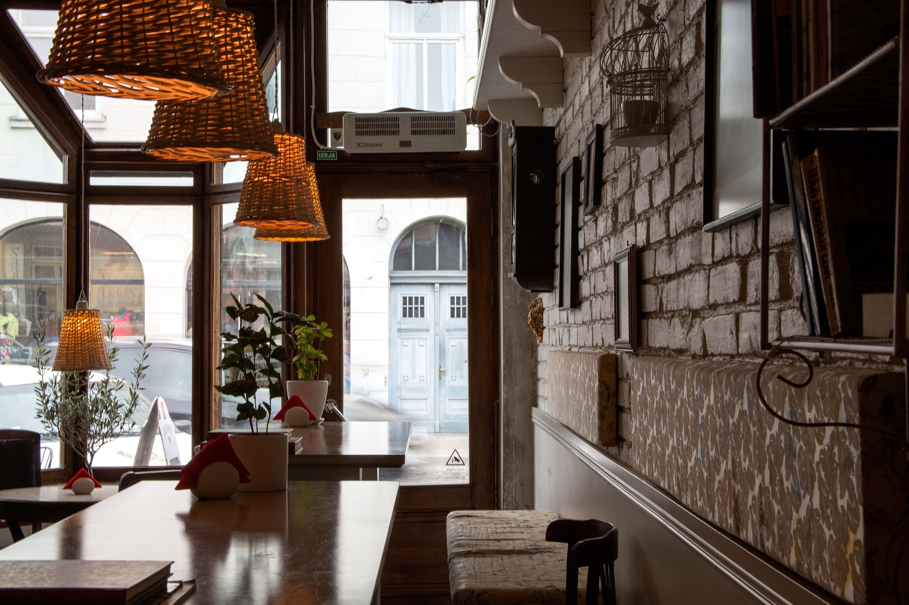

Where community, creativity, and great coffee come together.
Bean & Brew began as a small passion project created by local coffee enthusiasts who believed in more than just serving drinks. We envisioned a warm, inclusive space where everyone—students, workers, families, and artists—could gather and feel at home.
Today, Bean & Brew is a community hub known for high-quality artisan coffee, fresh pastries, and warm customer service.

We use freshly roasted beans and locally sourced ingredients to ensure exceptional flavour.
A welcoming environment where creativity, conversation, and collaboration thrive.
Eco-friendly packaging, ethical suppliers, and a commitment to reducing waste.